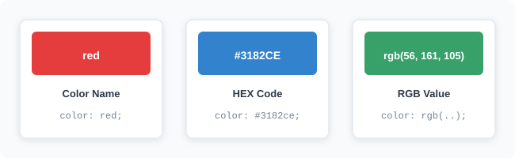
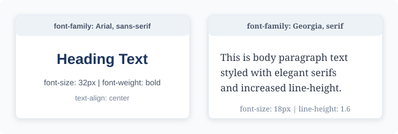
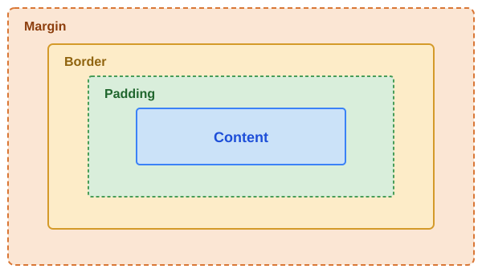
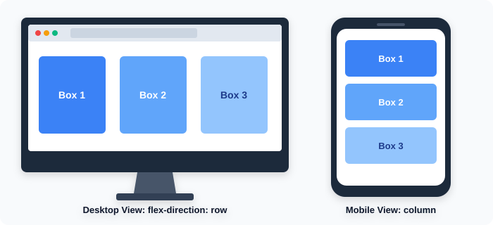

Name: Ahmed Hamdy El-Riashy Raghib
Student ID: 2502824
Academic Year: 2026 / 2027
In the modern world, websites have become an essential part of everyday life. People use websites for education, communication, shopping, business, and entertainment. However, a website needs more than information to be attractive and easy to use. It also needs a good design, suitable colors, readable fonts, and an organized layout.
CSS, which stands for Cascading Style Sheets, is one of the main technologies used in web development. It controls the appearance and presentation of web pages. Using CSS, developers can change colors, fonts, backgrounds, spacing, borders, and the overall layout of a website.
This report explains the meaning of CSS, how it works with HTML, and how it can be used to improve the appearance and usability of websites.
CSS is a style sheet language used to describe how HTML elements should appear on a web page. While HTML provides the structure and content of a website, CSS controls its visual design.
For example:
CSS can be added to an HTML document in three main ways:
style attribute.<style> element in the HTML document..css extension and connected to the HTML document. This method is commonly preferred for larger websites because it makes the design easier to manage and update.| Method | Where Styles Are Placed | Best Used For |
|---|---|---|
| Inline CSS | Directly inside an HTML element using the style attribute |
Quick testing or styling a single individual element |
| Internal CSS | Inside the <style> tag within the HTML <head> section |
Single-page websites with unique styles |
| External CSS | In a separate .css file connected via the <link> tag |
Large and multi-page websites for consistency and easy updates |
Colors are important in website design because they attract attention, communicate meaning, and create a visual identity.
CSS provides several ways to define colors, including:
red, blue, and green.#FF0000.rgb(255, 0, 0).
Figure 1: Common CSS Color Formats (Color Names, HEX Codes, and RGB)
The color property changes text color, while background-color changes the background of an element.
Example:
body {
background-color: #f2f2f2;
}
h1 {
color: blue;
}
p {
color: #333333;
}Heading in Blue (#0000FF)
This paragraph text appears in dark gray (#333333) over a light gray background (#f2f2f2), ensuring comfortable contrast and readability.
In this example, the webpage has a light gray background, the main heading appears in blue, and the paragraph text appears in dark gray.
Choosing suitable colors helps create a professional and comfortable user experience. Designers should also consider contrast to make text easy to read.
Fonts have a major effect on the readability and appearance of a website. CSS allows developers to control different text properties, including:
font-family: Defines the type of font.font-size: Controls the size of the text.font-weight: Controls how bold or light the text appears.font-style: Makes text normal or italic.text-align: Controls text alignment.text-decoration: Adds or removes decorations such as underlines.
Figure 2: Typography Comparison — Arial (Sans-Serif) vs. Georgia (Serif)
Example:
h1 {
font-family: Arial, sans-serif;
font-size: 32px;
font-weight: bold;
text-align: center;
}
p {
font-family: Georgia, serif;
font-size: 18px;
line-height: 1.6;
}Centered Bold Arial Heading
This paragraph text is styled with the Georgia serif font family at 18px font-size. Notice how the generous 1.6 line-height provides ample vertical breathing room between each line, making continuous reading effortless and clear.
This code makes the heading large, bold, and centered. It also gives the paragraph a different font and increases the space between lines to improve readability.
CSS can control the appearance of almost every element on a website. It can be used to design buttons, cards, navigation menus, images, and content sections.
A. Buttons
Buttons are important interactive elements. CSS can change their colors, sizes, borders, and shapes.
button {
background-color: #007bff;
color: white;
padding: 12px 24px;
border: none;
border-radius: 8px;
cursor: pointer;
}Without CSS (Browser Default):
With CSS (Modern Styled):
B. Borders and Backgrounds
Developers can add borders, background colors, and rounded corners to make website sections more attractive.
.card {
background-color: white;
border: 1px solid #ddd;
border-radius: 12px;
padding: 20px;
}This card demonstrates a crisp white background, subtle border, rounded 12px corners, and comfortable 20px internal padding.
C. Spacing and Layout
CSS uses the Box Model to control the size and spacing of elements. Its main parts are:

Figure 3: The CSS Box Model Structure (Margin, Border, Padding, and Content)
Understanding these properties helps developers organize webpage elements and create clean designs.
Responsive Web Design is an approach that makes websites work properly on different devices, including desktop computers, tablets, and smartphones.
A website should automatically adapt to different screen sizes to provide a good user experience.
CSS supports responsive design through flexible layouts, Flexbox, CSS Grid, and Media Queries.

Figure 4: Responsive Layout Adaptation — Desktop (Row) vs. Mobile (Column)
Example:
.container {
display: flex;
gap: 20px;
}
@media (max-width: 600px) {
.container {
flex-direction: column;
}
}(These boxes arrange horizontally on wide screens and stack vertically when the screen width is 600px or less.)
In this example, the content appears horizontally on wider screens. When the screen width becomes 600 pixels or less, the elements are arranged vertically.
Responsive design is important because many people access websites using mobile devices.
CSS offers several advantages in modern web development: